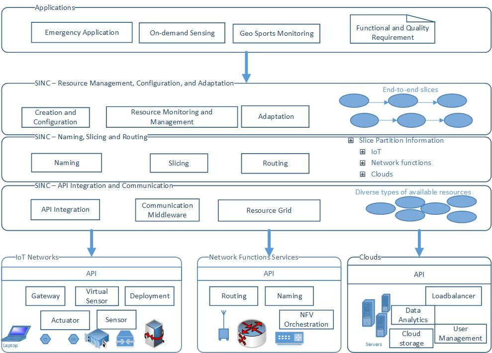

SINC - Slicing IoT, Network functions, and Clouds -- is an information-centric approach for end-to-end IoT cloud resource provisioning. The key idea is that by virtualiz- ing access to underlying IoT resources and leveraging APIs to manipulate those resources, we could develop techniques to enable IoT system designers to automate resource provisioning and management for users across IoT, network functions and clouds. In doing so, the SINC framework focuses on novel concepts to create and manage end-to-end slices of diverse types of resources from different, distributed infrastructures.
The SINC framework will include three layers: API Integration and Communication, Naming, Slicing and Routing, and Resource Management, Configuration, and Adaptation. We devise API Integration and Communication for integrating and communicating existing infrastructures of sen- sors, edge-to-cloud and cloud resources, each from different vendors, whereas Resource Management, Configuration and Adaptation is meant for specific operations on provisioning end-to-end slices for the applications. The Naming, Slicing and Routing layer comprises components for information-centric provisioning that are based on information-centric networking concepts. 
One of the first step is to harmonize resource information from different providers. We work on the HINC framework.
We provide an end-to-end slice of resources
How to compose and provision resources in slices
How to monitor and adapt resources in a slice.
© the SINC Team. Using a modified version of the Superfresh 2084 HTML template designed by template mo